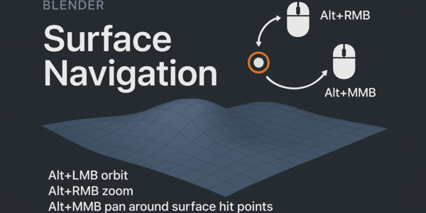
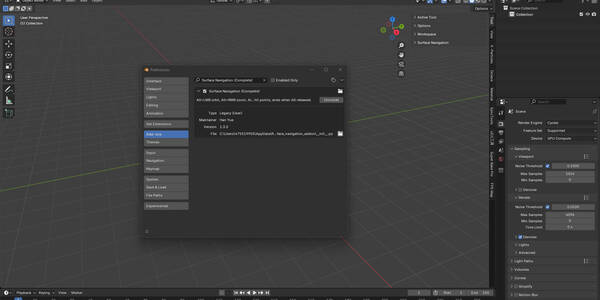
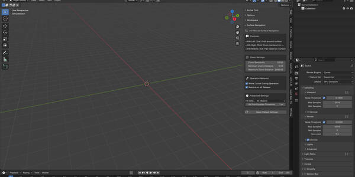
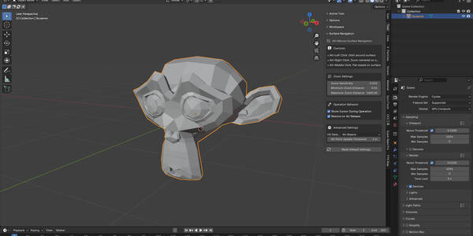
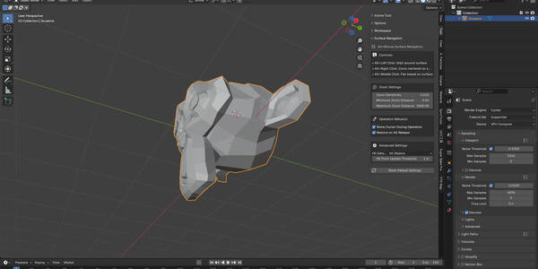
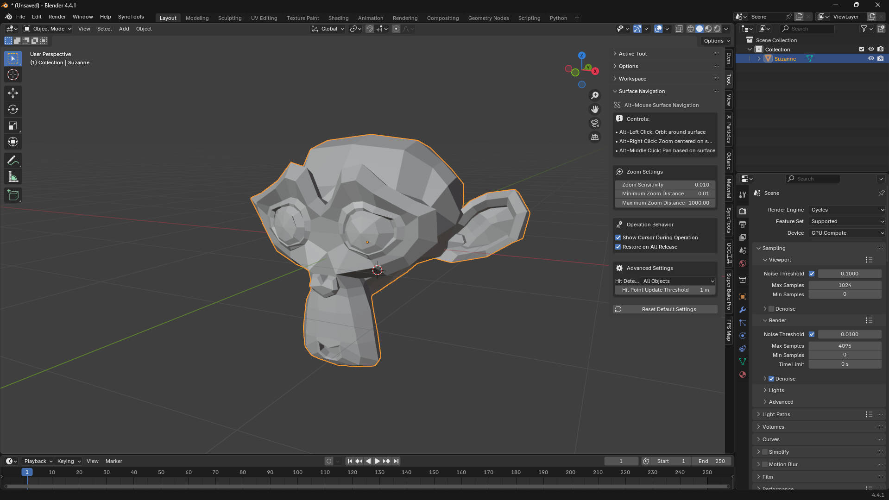
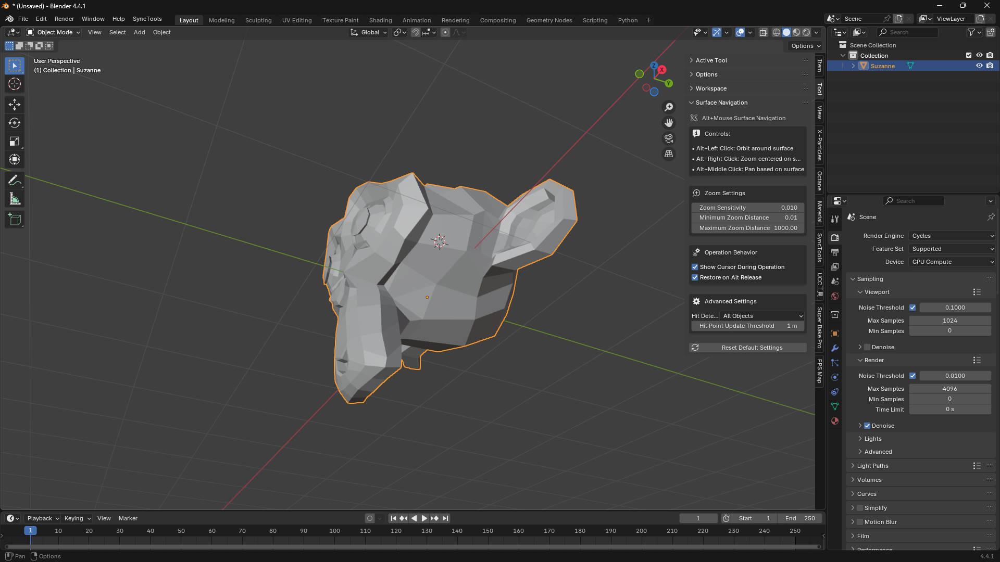
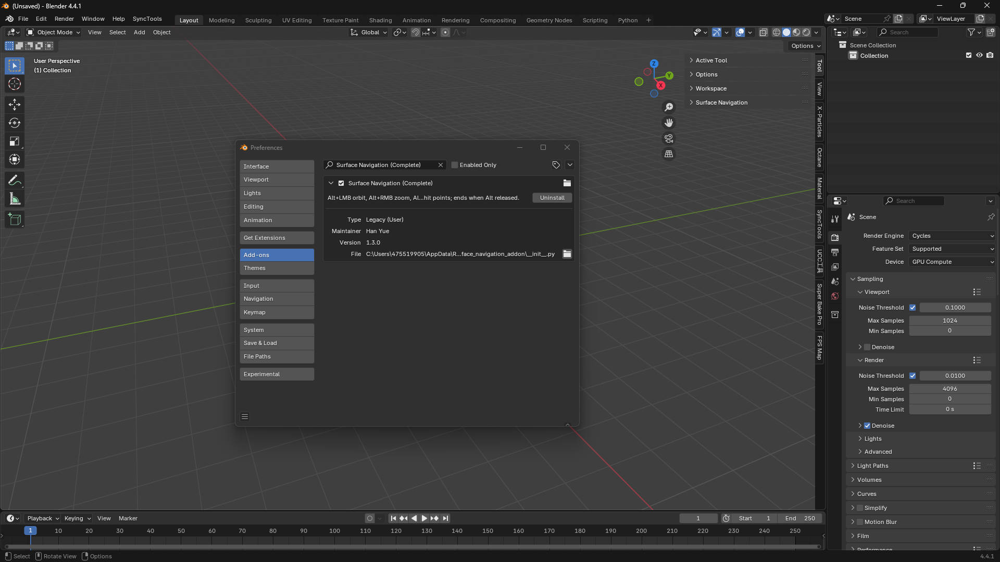

Alt Surface Navigation
$5.00相册





产品信息
描述
Alt Surface Navigation
高级 3D 视口导航（适用于 Blender）
通过以下工具改变您的 Blender 3D 导航体验： Alt Surface Navigation，一款提供直观的 基于表面的视口控件.
这个完整的导航解决方案允许您 围绕任何表面点旋转、缩放和平移 在 3D 场景中精确且轻松地操作。

✨ 核心功能
-
基于表面的导航 – 围绕实际表面命中点导航，而非任意视口中心
-
直观的控件 – 简单的 Alt + 鼠标组合进行所有导航操作
-
智能命中检测 – 可配置的检测模式，适用于所有对象、选中对象或可见对象
-
精确缩放 – 可调节的灵敏度和距离限制，实现完美控制
-
光标集成 – 操作期间可选的 3D 光标定位
-
阈值控制 – 通过命中点更新阈值防止导航抖动


🎮 导航控件
-
Alt + 左键点击 → 围绕表面命中点旋转
-
Alt + 右键点击 → 以表面位置为中心缩放
-
Alt + 中键点击 → 基于表面参考点平移
⚙️ 可自定义设置
-
缩放灵敏度调整 (0.001 – 0.1 range)
-
最小和最大缩放距离限制
-
命中点检测模式和更新阈值
-
操作期间的光标显示选项
-
释放 Alt 键时的恢复行为
📌 适合
-
精细的建模和雕刻 工作
-
建筑可视化
-
角色建模 和动画
-
Any 工作flow requiring 精确 3D 导航

🔧 集成和兼容性
-
无缝地 integrates into Blender’s 3D viewport
-
专用的设置面板 在工具类别中
-
所有设置均可通过 恢复默认值 选项访问
-
兼容 Blender 3.0+
-
专为 professional 工作flows
🚀 安装
-
安装 addon file in Blender
-
导航控件即可使用—— 无需复杂设置
-
开始使用 表面精度导航
文档
Alt Surface Navigation (完整的) - 高级 3D 视口导航（适用于 Blender）
通过以下工具改变您的 Blender 3D 导航体验： Alt Surface Navigation，一款提供直观的 基于表面的视口控件. 这个完整的导航解决方案允许您 围绕任何表面点旋转、缩放和平移 在 3D 场景中精确且轻松地操作。
KEY FEATURES:
- 基于表面的导航: 围绕实际表面命中点导航，而非任意视口中心
- 直观的控件: 简单的 Alt+鼠标组合进行所有导航操作
- 智能命中检测: 可配置的检测模式，适用于所有对象、选中对象或可见对象
- 精确缩放: 可调节的灵敏度和距离限制，实现完美控制
- 光标集成: 操作期间可选的 3D 光标定位
- 阈值控制: 通过命中点更新阈值防止导航抖动
NAVIGATION CONTROLS:
- Alt+左 Click: Orbit around surface hit points
- Alt+右 Click: Zoom centered on surface locations
- Alt+Middle Click: Pan based on surface reference points
CUSTOMIZABLE SETTINGS:
- 缩放灵敏度调整 (0.001 - 0.1 range)
- 最小和最大缩放距离限制
- 命中点检测模式和更新阈值
- 操作期间的光标显示选项
- 释放 Alt 键时的恢复行为
PERFECT FOR:
- 精细的建模和雕刻 工作
- 建筑可视化
- 角色建模 和动画
- Any 工作flow requiring 精确 3D 导航
The addon integrates seamlessly into Blender's 3D viewport with a dedicated 设置面板 in the 工具 category. All settings are easily accessible and can be reset to defaults with one click.
Compatible with Blender 3.0+ and designed for professional 工作flows. Whether you're a beginner learning 3D navigation or a professional seeking more precise viewport control, Alt Surface Navigation provides the tools you need for efficient 3D 工作.
安装 is simple - just install the addon file and the navigation controls are immediately available. No complex setup required - start navigating with 表面精度导航.
Take your Blender navigation to the next level with Alt Surface Navigation - where every click counts and every surface matters.
产品文件
- file_1.zip (8.5 KB)
- surface_navigation_addon.zip (1.0 KB)